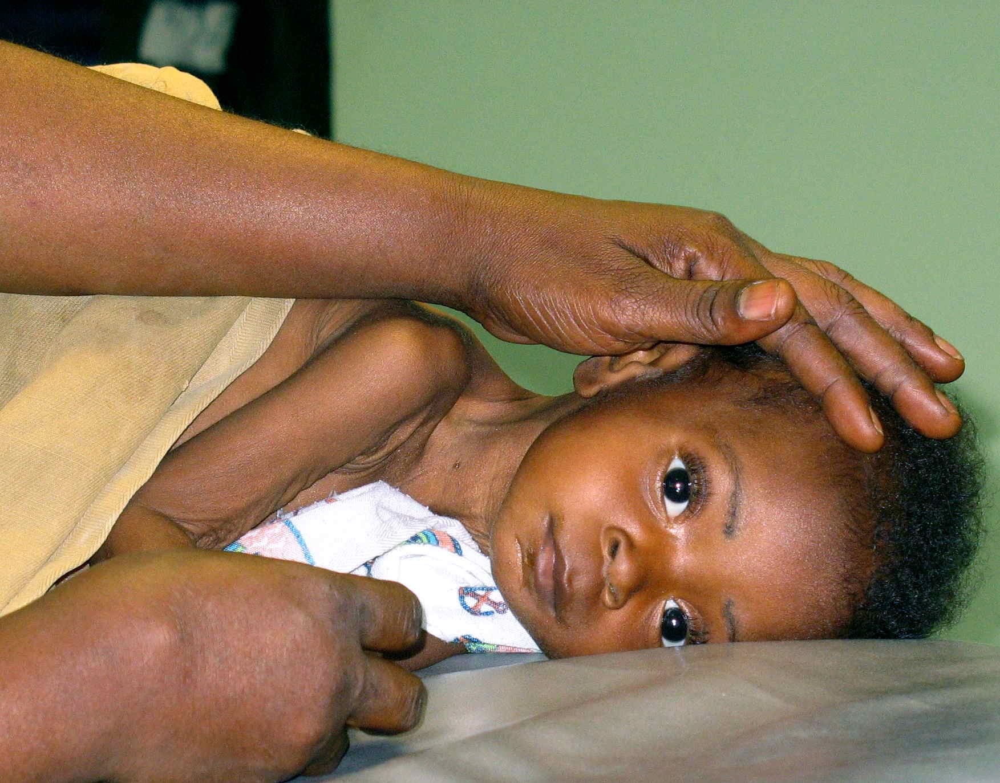

Chega criança que acabou de convulsionar com febre; ainda sonolenta, família desesperada — muitas vezes primeiro filho, menos de 1 ano. Nos primeiros minutos, o que organiza a prioridade?
🏛️ Campo de batalha · porta
Criança pós-crise febril, ainda sonolenta, família desesperada, primeiro filho < 1 ano. O que organiza os primeiros minutos?
O diagnóstico permanece clínico — mas a prática de porta organiza o pensamento de outro modo. Cenário: emergência como campo de batalha.
Chega criança que acabou de ter crise febril; ainda sonolenta, em período pós-ictal, se recuperando. Familiares desesperados — muitas vezes primeiro filho, com menos de 1 ano. A cena é assustadora para a família: o desespero parental é parte do atendimento, não ruído.
Se for crise febril típica: diagnóstico clínico → caminho de alta (após observação). Observação teórica/padrão: 6 horas, e depois vai para casa se estável.
⚠ Caixa-nuança · divergência de fonte
A plataforma mantém ≥6 h como padrão de serviço da fonte. Protocolos BR institucionais frequentemente usam 2–4 h ou "até retorno ao basal". O núcleo compartilhado de alta: estável, exame neurológico normal, causa da febre endereçada, orientação aos pais.
laudo [061] / [092] · DIVERGÊNCIA
O medo que manda
No campo de batalha, a preocupação não é primariamente "já é epiléptica e a febre só desencadeou". Criança com febre + convulsão na porta: o medo que manda é meningite.
Meningite bacteriana é emergência médica / emergência infecciosa. Tempo porta–antibiótico máximo: 60 minutos. Quanto mais precoce o tratamento, menor a morbimortalidade. Papar mosca em meningite bacteriana equivale a óbito. Se o tratamento atrasa e a criança sobrevive, o desfecho frequente é sequela cerebral.
Por isso, pensar meningite na porta leva a questionar a punção lombar. O protocolo de parar crise >5 min (benzo) é o da estação de status; aqui a âncora de porta é não perder meningite.
NÃO (agora)
“Já é epiléptica?”
EEG/AED não pagam o relógio infeccioso — não é a âncora dos primeiros minutos.
SIM (agora)
MENINGITE
Emerência infecciosa: porta–ATB ≤ 60 min. Atraso = óbito ou sequela.
≤ 60′
porta–antibiótico na suspeita de meningite bacteriana. Quanto mais precoce, menor a morbimortalidade. Atraso = óbito ou sequela cerebral.

Preparação de punção lombar pediátrica — setup de urgência. Na porta, o clock porta–ATB e a suspeita de meningite mandam o ritmo (indicação de PL e ATB conforme o texto soberano). Child being prepared for lumbar puncture · foto de Mike Blyth (ECWA Evangel Hospital, Jos, Nigéria), via Wikimedia Commons · CC BY 3.0 · Fonte: commons.wikimedia.org/wiki/File:Child_being_prepared_for_lumbar_puncture.jpg · A foto não afirma indicação universal de PL; o critério é seletivo.
📌 Resumo operacional
Porta = meningite primeiro · ≤60 min ATB · pós-ictal + família · típica → obs 6 h → alta.
Conexão
Se o medo é meningite, quando a punção é mandatória — e como o antibiótico em curso engana o exame.
🧠 Quiz
Q1. Na porta, criança febril pós-crise. Qual prioridade organiza os primeiros minutos?
Q2. Sobre observação e alta na crise febril típica: